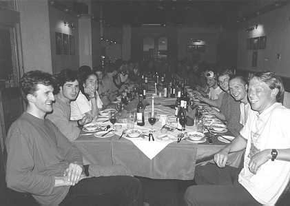

1. What follows is a true and proper record of those things which came to pass, in the reign of Il Presidente Dave the Smiley of Countenance and Fair of Head.
2On the first trip of the year, the faithful of the CUMC travelled far, even unto the Cliffe of Arms, in spite of the fact that the Driver of the Minibus was sorely hungover and couldn't climb all day. And the Gods smiled upon the blessed, and the meet was sunny.
3But evil times fell upon the chosen few, and the First Meet of the Novices was plagued by foul and tempestuous rain. And the novices and unfaithful, being weak of Spirit, 4did cry out against the Gods and grind their teeth in the darkness, yea even among the Holy Boulders of Stanage.
5And the members of the CUMC did not repent of their sins, but being disloyal to the Cause decreed that on the Second Meet of the Novices they should travel even unto the Climbing Wall at the End of the Mile, as it was raining again. And lo! 6they remained dry, and yet the Gods were displeased by their actions.
But their punishment was yet to come, for the next trip was to the Roaches, and it only rained a little bit and many routes were ascended. 7And during the week a great feast was held at the College of the Queens, and verily did all the assembled company get pissed.
8But the traditional meet to the Northern Wastes of Wales was a week late, and the wrath of the Gods was therefore visited upon the CUMC. For Il Presidente Dave and his cohort Scott of Far-Off Lands were taken even unto the Moon, 9and there they remained until the anger of the Gods was appeased and they were rescued by the Guardians of the Coast in the Chopper of Deliverance, even while Leyla of Chamonix was abandoned in the Plas that is called Y Brenin. 10And the rest of us knew nothing of this, because we in the pub.
However the Gods did not yet smile upon the CUMC, and while some of the faithful members drove to the Southern Cliffs of Wales the next weekend, they were confronted once again with drizzle and minging conditions. 11But being strong of will they went out and climbed Diffs in the rain anyway, and Mike tried to fall in the sea. But the Gods were pleased that Andrew and Helen had done their first leads that day, and he didn't even get wet. And that week, .html Great Feast was held and everyone got pissed again, and they drank all my whisky afterwards, the bastards.
12And it came to pass that by this time some of the blessed became fed up with being rained on all the time, and they railed against the gods and spake foul blasphemies about the weather. 13And the Gods didn't like this, because when a few hardy souls ventured unto Crookrise, it snowed, and so the sinners retired to the Leeds Wall. However, the ire of the Gods was aroused by this act, and the very next day did they vent their anger upon the CUMC within the Gorge of Avon. 14And Il Presidente Dave, having left the Path of Wisdom, did once again fall into sin and lead the club even unto the climbing wall, wherein lurked evil spirits.
15But the members of the CUMC were unrepentant, and held .html drinking session, this time under the auspices of the Party of the Mulled Wine. And the Gods were appeased by the sound of such merriment, and by the appalling sixties vestments which were worn by the faithful, 16especially the hideous Pink Shirt of Leyla of Chamonix, and the atrocious costume of Stu who was Little and Fair (but only because he was wearing a silly blonde wig).
And Lo! The Gods did relent for a time, and their wrath was abated. 17And the blessed snow did fall upon the Mountains that are Way Up North, and Il Presidente Dave, having forsaken the foul spirits of the climbing walls, did lead a foray even up to Scotland while the conditions were reasonable. 18And thus did the term end, with many of the faithful and blessed making a long and arduous pilgrimage to the Mountains that are Way Up North to celebrate the Festival of Hog Manay and to climb amongst the Frozen Wastes.
2. But it came to pass that the Gods had set a curse upon the Mountains that are Way Up North, for even before the beginning of Lent Term did the Great Thaw come upon the mountains, and it rained solidly for weeks, 2and many discontented mutterings were heard in the Granta of a Monday evening. And the Feast of the Rising Kitchen was held, and everyone had a good time because it was indoors.
But salvation was at hand, and when the British Universities Bouldering Competition took place the Gods smiled upon the faithful. 3For Stu (who was Little and less Fair because he'd dyed his hair red after he bleached it) brought laud and honour to the Faithful by winning, even in the diabolical pits of the Foundry of All Evil Things.
4And after this some of the Chosen Few thought that the Curse of the Rains had been lifted, and they drove once again unto the Southern Cliffs of Wales, but it rained all weekend. 5Again. Even the Mountains that are Way Up North were still not really in condition, although pilgrimages were still made by the Faithful, in spite of the fact that it wasn't really worth the effort.
6Still the Curse persisted, even as the End of Term approached, and although the Gods relented and the CUMC travelled to the Edge of the Mill Stone, 7but malevolent Gremlins had placed big lumps of metal within the Tyres of the Minibus; and Matt the Lanky and Stu who was Little and getting Fairer (because the red hairdye was washing out) spent half the day pissing around in Sheffield trying to get them out again. 8But the Gods approved of this, and thus did they send one of their Angels even unto the Holy Boulders of Stanage, and only Stu was there to witness this marvellous event. And thus did the Term draw to a close.
3. The Curse was finally lifted (for a while at least) over Easter, the Gods having finally heeded the prayers of the Faithful. And so dry was it that even the Mighty Bastion of Cloggy dried out, and was climbed upon before term started, and Phil and Helen got benighted together (not for the first time). 2But the Gods were again angered because the following day was spent gear shopping, and thus was inclement weather visited upon the Members who ventured unto the Rocks that are Black. But yet .html pilgimage was made to the 3Shrine of the Holy Boulders of Stanage, and the rain ceased, and the Gods in their infinite mercy saw fit even to allow the Blessed Sun to shine.
This was to be only a temporary respite, for the Gods, in Their infinite majesty, having decreed that sport-climbing was a mortal sin, 4and therefore was the next weekend away, upon the Isle of Portland (where there are bolts) was a total washout, and it was even too wet for deep-water soloing. 5But that week the Blessed Fraternity of the CUMC met at the College that is Miles From Anywhere, to chose from among their number a worthy successor to Il Presidente Dave and the other Exalted Members of his Committee. 6And although Stu (who was still Little, but becoming less Fair by this time as he had a bad case of undyed roots showing) promised good weather for a year if he were elected, the Gods were not pleased by this attempted usurption of their authority, and therefore by their influence was Leyla of Chamonix elected to be La Pesidentessa for the next year. 7A Great Feast was held to mark this momentous event, and once again did the alcohol frow freely.
The CUMC, having taken heed of a Divine Oracle, went then once more unto Yorkshire (Rhylstone this time) and lo! the weather was only slightly Grim. 8And all present were amazed, for truly were they very far north, and some believed that their luck had finally changed. And so it finally came to pass that the Greatest Feast of the Year was held in a hostelry deep in the Northern Wastes of Wales; and thus did the Year come to an end, with many fine routes ascended, and everyone getting Stupendously Hammered once more.
Of course all the above is heresy. God gave man Almscliff, Stanage etc. and said:
(Ed: For those of you who have no idea what the above was about here is a list of where we have been this year)
There were also various Scottish trips this term and possibly .html rock meet or two that I have missed

The Annual Dinner at the Heights Hotel, Llanberis
Photo: Jasmine Minbashian